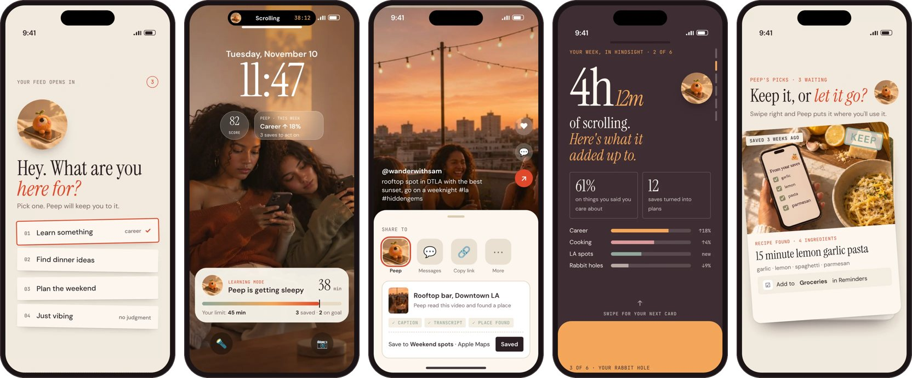
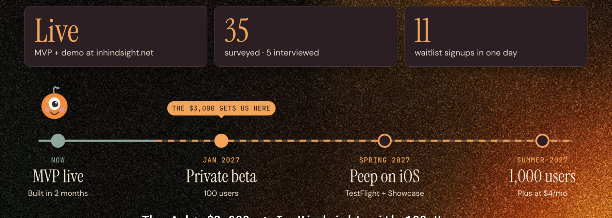

Oct 2026 to now
In Hindsight
Problem statement
A TikTok user who feels guilty about how long they scroll needs to get something out of what they save, but their saves disappear into folders they never open.
How It Went
-
Oct 2026Research
We Save Everything, Then Forget It All
Recipes, places, career advice. We save all of it and almost never go back.
Over half the world is on social media, and the apps barely do anything with what you save. In my research doc I called it a lack of depth in social media archival formatting. Basically, your saves go nowhere.
Hence the name. You look back at what you already watched, in hindsight, and actually use it.

-
Oct 2026Tech
Know Your Scroll
First I built a dashboard. Upload your TikTok export and see your scroll as a timeline, your topics and your rhythm. Everything stays in your browser.

-
Nov 9Research
35 Surveys, 5 Interviews
I posted a survey on SideChat, Snapchat, Reddit and iMessage and got 35 responses in a day. The surveys told me what people do. The interviews told me how scrolling feels.
The answers I kept rereading were people wanting something out of it:
94%gave up finding a save69%scroll longer than they meant to66%have 200+ saves- “I wish I could turn my inspiration, recipes, outfits, and products into something tangible.”
- “For my links to be organized automatically”
- “Feeling like I remember or was impacted by what I watched”
Source: In Hindsight survey of 35 young adults, mostly USC students, shared on SideChat, Snapchat, Reddit and iMessage, Nov 9, 2026
-
Nov 2026Design
You Saved It. Now Use It
So the product changed. Recipes go to Reminders, places go to Maps, plans go to Calendar.

-
Nov 2026Design
Peep
Peep, as in “I peeped it.” Also, it's cute.
Before you scroll, Peep asks what you're on TikTok for. While you scroll, Peep gets sleepy. Find something good, share it to Peep, and it gets filed. Every Sunday your week gets recapped like a feed.
Peep is a concept right now. It's next on the list to build.

-
Nov 2026Business
Who Else Is Doing This
Opal, one sec and Screen Time track your time. TikTok Collections, Dewey and TapFold hold your saves. None of them look at what you saved and do something with it. That's the gap.

-
Nov 2026Business
How High Is Up?
19.4 million U.S. college students to start, then 100 million U.S. adults on TikTok. Free to use, Plus at $4 a month. 63% of people I surveyed said yes or maybe to paying, and 11 joined the waitlist in one day.
Source: DataReportal 2026; Pew Research Center 2025; U.S. Census Bureau 2025; National Student Clearinghouse, Fall 2025; In Hindsight survey of 35 young adults, mostly USC students, shared on SideChat, Snapchat, Reddit and iMessage, Nov 9, 2026

-
2027Business
Where It's Going
The MVP is live and took 2 months. Next is a private beta for 100 people in January, Peep on iOS in the spring, and 1,000 users by summer. I applied for a $3,000 IYA Ignite grant to get to the beta.

Looking Back
- What worked
- Asking. The survey is the reason it went from a dashboard to Peep.
- What I'd do differently
- I built the dashboard first and asked people second. It worked out, but I'd flip it.
- What's next
- Build Peep and get it to 100 beta users.